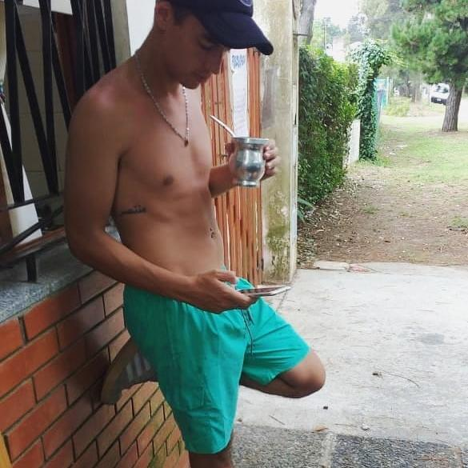

Quien soy
Curriculum
Contacto

Mi nombre es Federico Emanuel Frutos. Tengo 24 años, soltero y sin hijos. Soy estudiante de la carrera Analista de Sistemas en el Intituto Tecnologico Beltran. Actualmente me encuentro cursando el 2do año de la carrera.